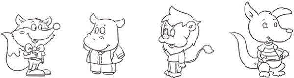
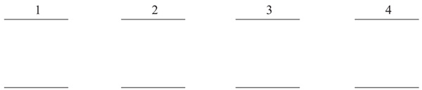
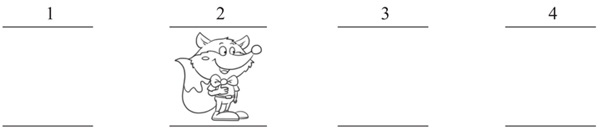
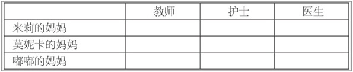
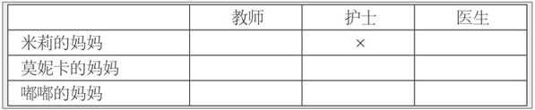
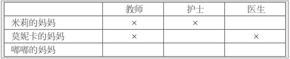
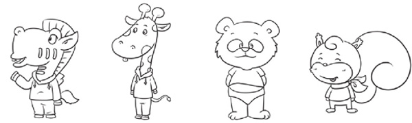
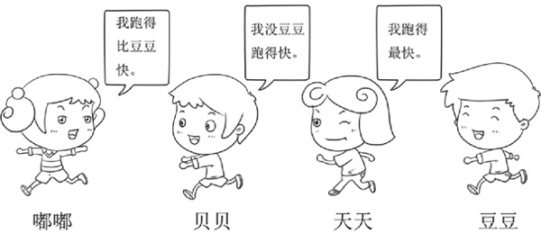

文字推理题可以有效地训练孩子的逻辑思维能力，增强孩子分析问题、解决问题的能力，培养孩子思维的有序性、严密性。
文字推理题需要通过一个或者多个判定条件进行推理，得出正确的判断。解答这样的题目时，要充分地利用题目给出的判定条件，合理使用表格等辅助手段和假设、排除等推理方法，从而找到问题的答案。建议解决此类题目时，一定要多借助图形手段和表格手段，这样既能帮助孩子找到解决问题的手段和方法，也能使孩子的思维更加有条理性，使其建立有序的思维。
典型例题 1 狐狸、河马、狮子和袋鼠4只动物排队购买电影票，现在知道狐狸排在第2位，河马挨着狮子，那么袋鼠排在第几位呢？

由于是4只动物排队，我们先把4个位置画出来，分别标上序号1～4，然后根据题目给出的条件，让动物占位。

根据狐狸排在第2位，我们把狐狸放到第2个位置上。

根据河马挨着狮子，从上面的占位图可以看到，河马不可能在第1位，否则河马就和狐狸挨着，不和狮子挨着，所以河马可能在第3位，或者在第4位。如果河马在第3位，狮子就在第4位，如果河马在第4位，狮子就在第3位，总之袋鼠在第1位。
以上的方法可以叫占位法，根据题目的已知条件让位置明确的事物占位，其他位置不明确的事物可以通过排除法和假设法确定其相应的位置，这样的方法通常适用于需要排序的文字推理题。
典型例题 2 米莉、莫妮卡、嘟嘟3个人猜对方妈妈的职业，他们的妈妈一位是教师，一位是医生，一位是护士，你能根据下面的3句话，猜出他们的妈妈分别是干什么的吗？
（1）米莉的妈妈不是护士。
（2）莫妮卡的妈妈不是医生。
（3）米莉的妈妈和莫妮卡的妈妈正在参加一位当教师的妈妈所带班级的家长会。
本题借助表格来解题，绘制如下的表格。

对于表格中的空白格，我们都要做出判断，肯定的判断打钩（√），否定的判断打叉（×），表格中每一行只能出现一个钩（√），每一列也只能出现一个钩（√），且必须有一个钩（√）。
根据条件（1），我们在横行找到“米莉的妈妈”，在竖列找到“护士”，
由于是否定的判断，所以打叉（×）。

根据条件（2），找到“莫妮卡的妈妈”和“医生”的交叉格，由于是否定的判断，所以打叉（×）。
根据条件（3），找到“米莉的妈妈”和“教师”的交叉格，以及“莫妮卡的妈妈”和“教师”的交叉格，由于是否定的判断，所以都打叉（×）。

从上面的表格可以看出：“米莉的妈妈”和“医生”的交叉格应该打钩（√），应该是肯定的判断，所以米莉的妈妈是医生；“嘟嘟的妈妈”和“教师”的交叉格应该打钩（√），应该是肯定的判断，所以嘟嘟的妈妈是教师；从而推断莫妮卡的妈妈是护士。
1.六一儿童节到了，老师给米莉、莫妮卡、嘟嘟各买了一个礼物，分别是毛毛熊、玩具汽车、拼图，现在知道以下条件。
（1）米莉拿的不是毛毛熊。
（2）莫妮卡拿的不是玩具汽车，也不是毛毛熊。
你知道他们每个人各拿了什么礼物吗？
2.斑马、长颈鹿、熊猫、松鼠4只动物一起排队做早操。

（1）斑马说：“我不排在第1个，也不排在最后一个。”
（2）长颈鹿说：“我排在第3个。”
（3）熊猫说：“我不在斑马的后面。”
你知道他们是怎么排队的吗？
3.嘟嘟、贝贝、天天、豆豆4名小朋友参加了100米短跑比赛，你能根据他们的对话，给他们的快慢排序吗？

4.请根据3名小朋友的对话，将他们按照轻重顺序排序。
5.一年级的4个班级各派出了1名代表参加了长跑比赛，根据下面的3句话，你能判断出比赛结果吗？
（1）1班代表比2班代表跑得快。
（2）3班代表比1班代表跑得快。
（3）4班代表比2班代表跑得慢。
6.为了庆祝六一儿童节，米莉、果果、莫妮卡、马克4名小朋友各自买了1个玩具送到了儿童福利院，你能根据他们的对话判断4名小朋友各买了什么玩具吗？
（1）米莉说：“我没去福利院，我让嘟嘟帮我把玩具汽车带给小朋友了。”
（2）莫妮卡说：“我没买拼图，也没买玩具飞机。”
（3）果果说：“我带了3个玩具去福利院，魔方和玩具飞机不是我的。”